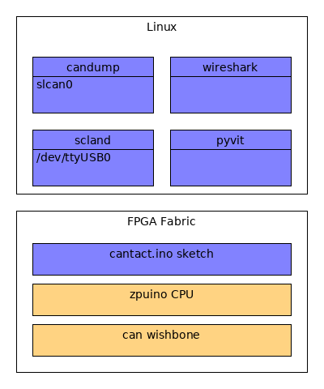
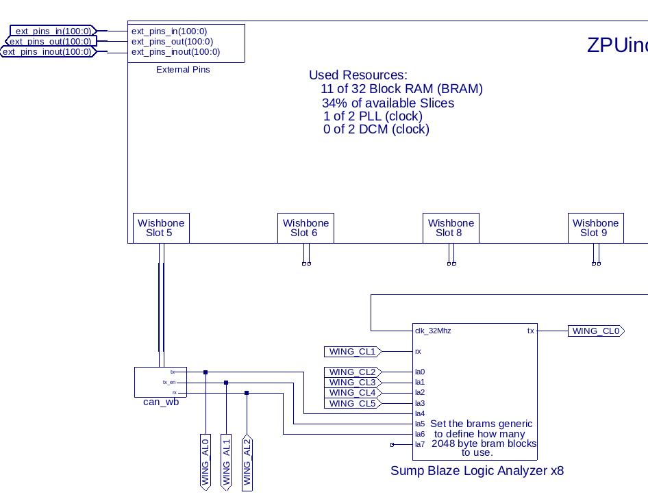

Linux support¶
Linux is supported by means of the linu can stack inclucing sclan.
On the hardware/FPGA side we run a sketch on the can-enabled ZPUino
Papilio pro setup¶
After installing DesignLab copy or links the DesignLab/libraries/can_wb to the libraries fanolder of DesignLab.
Next open Desiglab and select the can_wb/cantact sketch. Program the FPGA and upload the sketch.
The schematics setup looks like this
Linux setup¶
Start slcand from can-utils
sudo slcand -F -s 0 -S 115200 /dev/ttyUSB1
Bring up the slcan0 interface.
sudo ip link set up slcan0